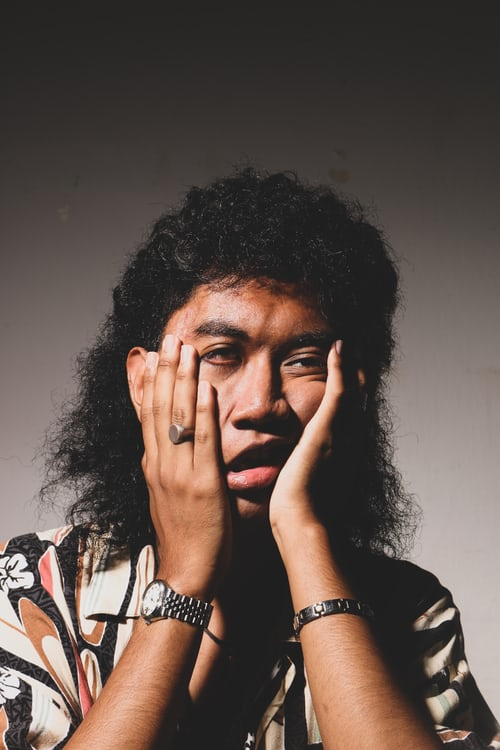

WELCOME TO ARTSY QUEEN PHOTOGRAPHY.
A good snapshot stops a moment from running away!
Artsy Queen Photography is a place that believes in presenting the beauty of nature through the camera lens.Artsy Queen Photography is owened by re-known award winning photographer Babra Kiyai.She's a writer who's a photogarapher and a photographer whos a writer.She grew up in Kenya, her parents owned a stock footage company and she accompanied them across the world with her camera to places as far flung as Bhutan, Tibet, Europe,Indonesia and parts of Africa. She was previously the Deputy Photo Editor at Travel + Leisure Magazine in Nairobi and a frequent contributor to the magazine. She has a Bachelor’s degree from Nairobi University and has studied at the International Center of Photography. Babra is currently based in Nairobi Kenya.
Artsy Queen Photography deals in the following types of photos:
One of the most common photography styles, portrait photography, or portraiture, aims to capture the personality and mood of an individual or group.
Photojournalism is a way of telling the story of a newsworthy (perhaps even historic) event or scene through photographs.
Fashion photography showcases and glamorizes fashion clothing, shoes, and accessories to make them more desirable to consumers.
By catching athletes, coaches, and even fans at the perfect moment, sports photographs can depict the passion, drama, and emotion that fuels sporting events.
Nature photography covers shooting flora and fauna. This means plants, flowers, and animals, photographed in their immediate environments.